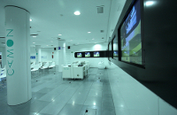
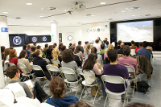
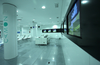
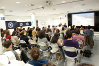
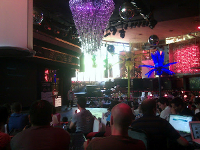
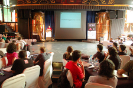
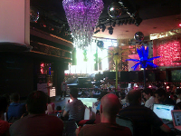
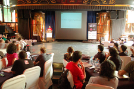

If you want to know about our news and have priority to buy a ticket
Locations
Workshops: Sala Camon
On July 5 the Sala Camon will host the workshops. Camon is a technological space of interaction and creation whose headquarters is located in Plaza Madrid Moncloa, 1, next to the subway exchanger.
 



Conference: Florida Park
6 and 7 July, talks will be held in Florida Park, Ferdinand VII, in the early nineteenth century, commissioned to build recreation of Elizabeth II, a Persian-style building, that the queen used as a hunting lodge and then meetings at the plot of land of the royal family. By donating the Crown to the people of Madrid Retiro Park, this old building became the first chapel, in the early and mid twentieth century the same spa, party room. Since then, a place where you can enjoy both a flamenco show and the celebration of any event.
 



Directions
Sala Camon is located in Plaza Madrid Moncloa, 1, next to the subway exchanger. Florida Park is located in the Parque del Retiro, Madrid. The nearest metro station is Retiro and Ibiza.
You can reach Madrid by plane to Barajas airport, from where you will catch a train or subway to get to the center of Madrid, or by train to the Atocha station located 10 min walk from Parque del Retiro.
Partners

Media Partners